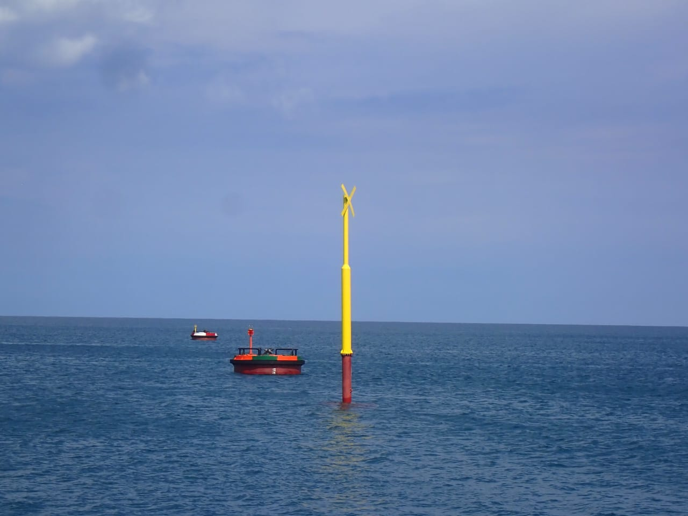

A navigation buoy is an important safety device designed to provide visual signals in the water, especially in emergency situations. This device is typically round or oval in shape and is equipped with bright colors and reflectors to enhance visibility, even in low-light conditions. Used to mark the location of someone who has fallen into the water, the navigation buoy is often fitted with a long rope to facilitate rescue operations. In more specific applications, such as on ships or docks, this buoy also serves as a navigation aid to attract the attention of rescue teams or other nearby vessels. Its reliability and ease of use make the navigation buoy a standard piece of equipment in the maritime and aquatic sectors.
Sinker
A sinker, often referred to as a Buoy Sinker, is a vital component in Aids to Navigation (ATON). Its role is crucial in keeping the navigation buoy stable at its designated location, especially in waters with strong currents and unpredictable weather. This stability ensures that the buoy can provide accurate navigation signals for vessels.
Spar Buoy

A spar buoy is a cylindrical buoy used as a navigation marker in the sea. Designed to float upright even in strong currents and waves, the spar buoy serves to guide vessels by marking hazards, safe routes, or specific areas.
Marker Bouy
A marker buoy is an essential component of the Aids to Navigation (AtoN) system, serving as a marker for specific areas in the water, particularly to mark hazards such as shipwrecks. With the presence of a marker buoy, vessels can be more alert and avoid the risk of accidents in that area.
The marker buoy is a reliable solution to enhance safety and efficiency in maritime navigation. With high-quality materials, advanced design, and customization flexibility, the marker buoy is ready to meet the needs of the maritime sector.
Mooring Buoy
A mooring buoy is a crucial device in various maritime activities, from navigation to research. With the right design, a mooring buoy not only keeps a vessel in place but also enhances safety in the water. Choosing the appropriate type and design based on specific needs is essential to ensure its optimal and efficient function.